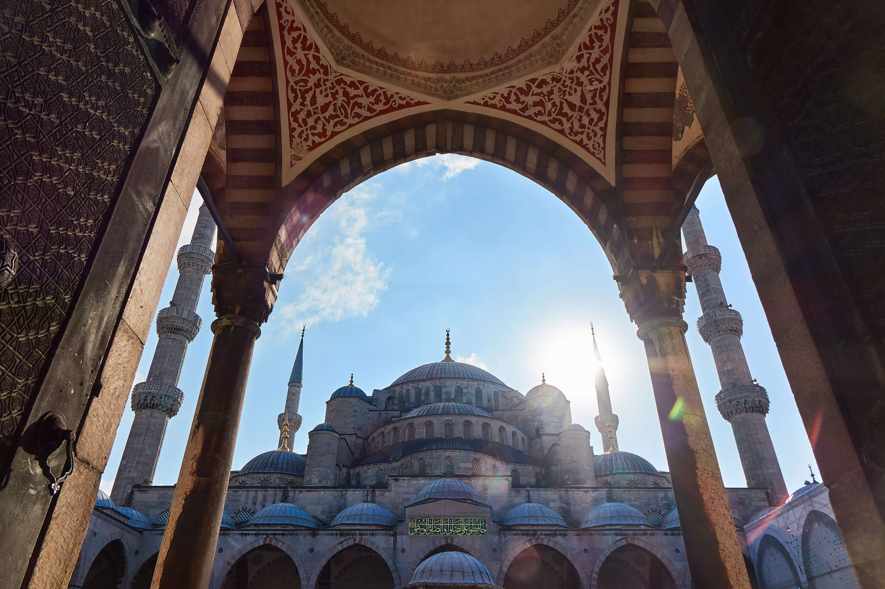

L'Italie est un pays d'Europe du Sud correspondant physiquement à une partie continentale, une péninsule située au centre de la mer Méditerranée et une partie insulaire constituée par les deux plus grandes îles de cette mer, la Sicile et la Sardaigne, et beaucoup d'autres îles plus petites, cédée par la République de Gênes à la France en 1768. Elle est rattachée au reste du continent par le massif des Alpes. Le territoire italien correspond approximativement à la région géographique homonyme.L'Italie apporte une contribution très importante à la civilisation occidentale : elle est notamment le berceau de la civilisation étrusque, de la Grande-Grèce, de l'Empire romain, du Saint-Siège, des républiques maritimes, de l'humanisme et de la Renaissance. Existant en tant qu'État unitaire depuis 1861 à la suite du Risorgimento (Renaissance ou Résurrection) mené par le royaume de Sardaigne, l'Italie est une république depuis l'abolition par référendum de la monarchie italienne en 1946. Elle est membre fondateur de l'Union européenne et de la zone euro.
La Turquie est un pays transcontinental situé aux confins de l'Asie et de l'Europe. Elle a des frontières avec la Grèce et la Bulgarie à l'ouest-nord-ouest, la Géorgie et l'Arménie à l'est-nord-est, l'Azerbaïdjan (Nakhitchevan) et l'Iran à l'est, l'Irak (Gouvernement régional du Kurdistan) et la Syrie à l'est-sud-est. Il s'agit d'une république à régime présidentiel dont la langue officielle est le turc. Sa capitale officielle est Ankara depuis le 13 octobre 1923. La Turquie est bordée au nord par la mer Noire, à l'ouest par la mer Égée et au sud-ouest par la partie orientale de la mer Méditerranée : le bassin Levantin. La Thrace orientale (Europe) et l'Anatolie (Asie) sont séparées par la mer de Marmara.

Le Japon forme, depuis 1945, un archipel de 6 852 îles (de plus de 100 m2), dont les quatre plus grandes sont Hokkaidō, Honshū, Shikoku et Kyūshū, représentant à elles seules 95 % de la superficie terrestre du pays. L'archipel s'étend sur plus de trois mille kilomètres. La plupart des îles sont montagneuses, parfois volcaniques. Ainsi, le plus haut sommet du Japon, le mont Fuji (3 776 m), est un volcan dont la dernière éruption a eu lieu en 1707. Le Japon est le onzième pays le plus peuplé du monde, avec plus de 125 millions d'habitants pour 377 975 km2 (337 hab./km2), dont l'essentiel est concentré sur les étroites plaines littorales du sud de Honshū et du nord de Shikoku et Kyūshū, formant un ensemble pratiquement urbanisé en continu appelé « Mégalopole japonaise » ou « Taiheiyō Belt » (太平洋ベルト, Taiheiyō beruto?, littéralement « ceinture Pacifique »). Le Grand Tokyo, qui comprend la capitale Tokyo et plusieurs préfectures environnantes, est la plus grande région métropolitaine du monde, avec plus de 35 millions d'habitants. La ville a été première place financière mondiale en 1990.